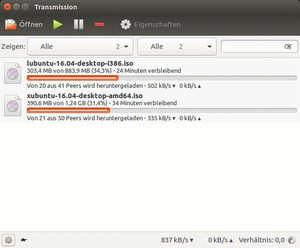
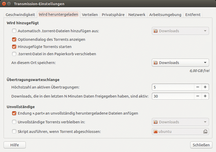
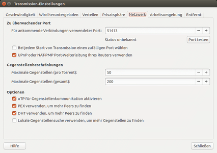

Transmission
Dieser Artikel wurde für die folgenden Ubuntu-Versionen getestet:
Ubuntu 16.04 Xenial Xerus
Ubuntu 14.04 Trusty Tahr
Zum Verständnis dieses Artikels sind folgende Seiten hilfreich:
Transmission  ist ein kleines, aber vielseitiges BitTorrent-Programm, welches unter der GPL-Lizenz veröffentlicht wurde. Seine einfache und intuitive Bedienoberfläche fügt sich nahtlos in jede Desktop-Umgebung ein. Das quelloffene Programm bringt eine Vielzahl von Funktionen mit, ohne überladen zu wirken. Unter Ubuntu, Lubuntu und Xubuntu ist es das vorinstallierte Standard-Programm für das BitTorrent-Netzwerk.
ist ein kleines, aber vielseitiges BitTorrent-Programm, welches unter der GPL-Lizenz veröffentlicht wurde. Seine einfache und intuitive Bedienoberfläche fügt sich nahtlos in jede Desktop-Umgebung ein. Das quelloffene Programm bringt eine Vielzahl von Funktionen mit, ohne überladen zu wirken. Unter Ubuntu, Lubuntu und Xubuntu ist es das vorinstallierte Standard-Programm für das BitTorrent-Netzwerk.
Wie man Transmission als eigenständigen Dienst z.B. auf entfernten Rechnern installiert und fernsteuert, wird im Artikel transmission-daemon erklärt.
Merkmale¶
Automatisches Port-Mapping (mittels UPnP/NAT-PMP)
Schnelle Wiederaufnahme von Übertragungen
Ein einziger Eingangs-Port für alle Übertragungen
Individuelle Geschwindigkeitsbegrenzung für Torrents
Priorisierungssystem für Torrents
Verschleierte Verbindungen
Erstellung von Torrent-Dateien
Optionales Webfrontend
Installation¶
 Transmission ist in den offiziellen Paketquellen enthalten. Installiert [1] wird das Programm mit folgendem Paket:
transmission
 mit apturl
mit apturl
Paketliste zum Kopieren:
sudo apt-get install transmission
sudo aptitude install transmission
PPA¶
Falls eine aktuellere Version erforderlich ist, kann entweder auf ein "Personal Package Archiv" (PPA) [2] oder Fremdpakete ausgewichen werden.
Adresszeile zum Hinzufügen des PPAs:
ppa:transmissionbt/ppa
Hinweis!
Zusätzliche Fremdquellen können das System gefährden.
Ein PPA unterstützt nicht zwangsläufig alle Ubuntu-Versionen. Weitere Informationen sind der  PPA-Beschreibung des Eigentümers/Teams transmissionbt zu entnehmen.
PPA-Beschreibung des Eigentümers/Teams transmissionbt zu entnehmen.
Damit Pakete aus dem PPA genutzt werden können, müssen die Paketquellen neu eingelesen werden.
Nach dem Aktualisieren der Paketquellen erfolgt die Installation dann wie oben beschrieben.
Grafische Oberfläche¶
Benutzung¶
Nach der Installation kann man Transmission über den GNOME-Menü Eintrag "Anwendungen -> Internet -> Transmission" starten. Im Xfce- bzw. LXDE-Menü ist das Programm unter "Netzwerk -> Transmission" zu finden. Transmission kann von der Kommandozeile aus mit dem Befehl:
transmission-gtk
gestartet werden. Die Bedienung des Programms ist intuitiv zu erfassen und wird im Folgenden nur kurz beschrieben:
| Bedienung | |
| Element | Bedeutung |
 | Torrent-Datei öffnen |
 | Download starten. |
 | Download anhalten. |
 | Download aus Liste entfernen. |
Datei als Seed zur Verfügung stellen¶
Hierzu legt man einen Ordner an, in dem die heruntergeladenen Dateien liegen sollen. Eine .torrent-Datei ist im Regelfall nur wenige KB groß und enthält die Meta-Informationen zum Download. Diese öffnet man entweder direkt oder lädt sie herunter und zieht sie per Drag-and-Drop in das Fenster von Transmission. Hier taucht sie nun mit einem grünen Balken auf.
Einstellungen¶
Unter "Bearbeiten -> Einstellungen" gelangt man zum Einstellungsmenü. Dies enthält verschiedenste Optionen:
| Einstellungen | |
| Menüpunkt | Beschreibung |
| "Geschwindigkeitsbegrenzung" | Setzen der maximalen Geschwindigkeiten für das Herunter- und Hochladen von Dateien. |
| "Privatsphäre" | Details wie Blockierliste und Verschlüsselung |
| "Downloads/Torrents" | Einstellen des Downloadordners sowie Einstellungen für den Umgang mit Torrent-Dateien |
| "Netzwerk" | Zu nutzenden Port festlegen |
| "Optionen" | nützliche Zusatzeinstellungen, z.B. ein Symbol im System-Tray |
|  |
| Einstellungen |
|  |
| Einstellungen - Netzwerk |
Portweiterleitung¶
Ohne UPnP muss unter "Netzwerk" der Port 51413 vom Router zum Rechner weitergeleitet werden (siehe Abbildung). Ansonsten kann der eigene Rechner nicht als Seed für andere dienen. Zu dieser Thematik siehe auch Portweiterleitung.
Tastenkürzel¶
| Tastenkürzel | |
| Taste(n) | Funktion |
| Strg + O | Torrent-Datei öffnen |
| Strg + S | Download starten. |
| Strg + P | Download anhalten. |
| Strg + Entf | Download aus Liste entfernen. |
| Strg + A | Alle Dateien auswählen. |
| ⇧ + Strg + A | Alle Dateien abwählen. |
| Alt + ⏎ | Detailinformationen zum Download. |
| Alt + M | Kompaktansicht |
| Strg + N | Neuen Torrent erstellen. |
| Strg + W | Programm schließen. |
| Strg + Q | Programm beenden. |
Kommandozeilenversion¶
Bedienung¶
Die Kommandozeilenversion von Transmission wird mit folgender Syntaxe verwendet:
transmission-cli [Option] (torrent-Datei/Link/Magnetlink)
| Verfügbare Optionen | |
| Option | Erklärung |
-b --blocklist | Aktiviert die Blockliste. Neue Blocklisten werden im Ordner ~/.config/transmission/blocklists/ abgespeichert. |
-B --no-blocklist | Deaktiviert die Blockliste. |
-d --downlimit ZAHL | Setzt die maximale Downloadgeschwindigkeit (ZAHL) in KB/s fest. |
-D --no-downloadlimit | Hebt das Downloadlimit auf. |
-er --encryption-required | Verschlüsselung wird verlangt |
-ep --encryption-preferred | Verschlüsselte Verbindungen werden bevorzugt |
-et --encryption-tolerated | Unverschlüsselte Verbindungen werden bevorzugt |
-f, --finish SCRIPT | Gibt den Pfad zum Script an, welches nach dem vollständigen Download ausgeführt werden soll. |
-g, --config-dir ORT | einen alternativen Ort für die Konfigurationsdatei festlegen, um eine unabhängige Benutzung von der grafischen Version zu ermöglichen. |
-h, --help | Gibt eine kurze Hilfe aus |
-n, --new SOURCEFILE | Erzeugt eine neuen Torrent auf Grundlage einer Datei oder eines Ordners (SOURCEFILE). |
-p, --port port | Den zu benutzenden Port festlegen (Default: 51413) |
-u, --uplimit ZAHL | Setzt die maximale Uploadgeschwindigkeit (ZAHL) in KB/s fest. |
-U, --no-uplimit | Hebt die Begrenzung der Uploadgeschwindigkeit wieder auf. |
-v, --verify | Die bisher heruntergeladenen Dateien überprüfen |
-w, --download-dir ORT | Den Ordner festlegen, wo die Dateien gespeichert werden sollen |
Transmission stoppen¶
Möchte man den Download unterbrechen, dann kann man Transmission mit Strg + C anhalten. Der Download wird dadurch unterbrochen. Mit dem Startbefehl kann man den Download jederzeit wieder an dieser Stelle fortsetzten.
Beispiel¶
transmission-cli -d 400 -er -u 25 -w ~/Downloads http://releases.ubuntu.com/12.04/ubuntu-12.04-desktop-amd64.iso.torrent
Mit diesem Befehl wird die ISO-Datei ubuntu-12.04-desktop-amd64.iso heruntergeladen. Dabei wird die Downloadgeschwindigkeit auf 400 KB/s und die Uploadgeschwindigkeit auf 25 KB/s beschränkt. Außerdem werden nur verschlüsselte Verbindungen akzeptiert und die Iso-Datei wird in Ordner ~/Downloads gespeichert.
Sicherung erstellen¶
Eine Sicherung der Dateien und Einstellungen von Transmission kann zum Beispiel nötig werden, wenn man das System neu aufsetzen oder den Download der torrent-Datei auf einem anderen System fortsetzen möchte. Um alle benötigten Daten zu sichern, kopiert man alle Dateien und Ordner aus dem versteckten Ordner "/home/BENUTZERNAME/.config/transmission" und selbstverständlich zusätzlich auch die bereits teilweise heruntergeladenen Dateien aus dem Downloadverzeichnis. Nachdem man das System neu aufgesetzt bzw. Transmission auf einem anderen System neu installiert hat, kopiert man die gesicherten Dateien wieder in die entsprechenden Ordner zurück. Eventuell muss der Pfad zum Downloadordner im Programm noch angepasst werden.
Problembehebung¶
UDP-Socketpuffer für µTP optimieren¶
Für Peers, die µTP verwenden, kann der Datendurchsatz erhöht werden, indem die Pufferobergrenzen pro Socket in der Systemkonfiguration erhöht werden. Typischerweise weist Transmission darauf wie folgt im Fehlerprotokoll hin:
1 2 3 4 | Tue May 28 10:09:43 2013 error UDP Failed to set receive buffer: requested 4194304, got 262142 Tue May 28 10:09:43 2013 UDP Please add the line "net.core.rmem_max = 4194304" to /etc/sysctl.conf Tue May 28 10:09:43 2013 error UDP Failed to set send buffer: requested 1048576, got 262142 Tue May 28 10:09:43 2013 UDP Please add the line "net.core.wmem_max = 1048576" to /etc/sysctl.conf |
Experten-Info:
Transmission nutzt für sämtliche µTP-Verbindungen mit anderen Peers einen einzigen UDP-Socket und ein größerer Puffer stellt sicher, dass bei mehreren gleichzeitig empfangenen, mitunter langsam übertragenen, Paketen möglichst wenig Daten aufgrund eines vollen Puffers vor Empfang des gesamten Paketes verworfen werden müssen.
Dies lässt sich wie folgt umsetzen:
sudo sh -c "echo 'net.core.rmem_max = 4194304' >> /etc/sysctl.conf" sudo sh -c "echo 'net.core.wmem_max = 1048576' >> /etc/sysctl.conf" sudo sysctl -p
Experten-Info:
Bei z.B. sehr schnellen VDSL-Anschlüssen oder der internen Nutzung von Transmission in Gigabit-Intranets mit extrem vielen gleichzeitigen Peer-Verbindungen empfiehlt es sich sogar, bis zum vierfachen an maximalem Socketpuffer zu erlauben:
sudo sh -c "echo 'net.core.rmem_max = 16777216' >> /etc/sysctl.conf" sudo sh -c "echo 'net.core.wmem_max = 4194304' >> /etc/sysctl.conf" sudo sysctl -p
Quellen: Transmission uTP and UDP buffer optimizations , Use large kernel buffers for the UDP socket when uTP is enabled
Links¶
 Programmübersicht
Programmübersicht- Erstellt mit Inyoka
-
 2004 – 2017 ubuntuusers.de • Einige Rechte vorbehalten
2004 – 2017 ubuntuusers.de • Einige Rechte vorbehalten
Lizenz • Kontakt • Datenschutz • Impressum • Serverstatus -
Serverhousing gespendet von